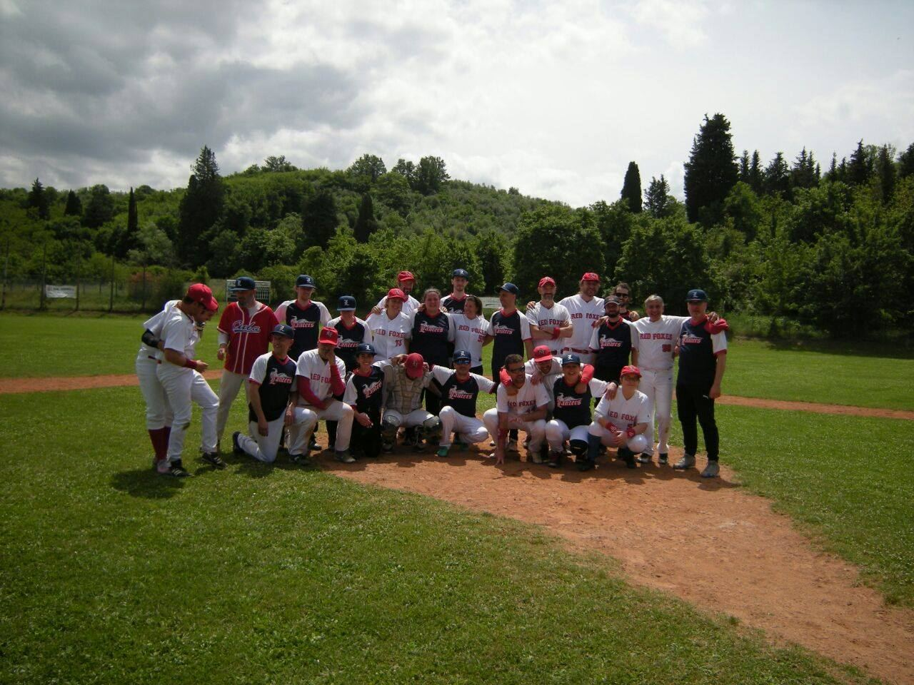

“Care amiche e cari amici, inizio d’anno; momento di bilanci e di auguri. In un momento così delicato e difficile per il nostro amato baseball oggi il mio messaggio è sereno e colmo di speranza per il futuro a venire.
“Care amiche e cari amici, inizio d’anno; momento di bilanci e di auguri. In un momento così delicato e difficile per il nostro amato baseball oggi il mio messaggio è sereno e colmo di speranza per il futuro a venire.
Chiudiamo positivamente un altro anno fondamentale per la nostra realtà; il nostro secondo anno in Serie B con un settore giovanile in crescita e la nascita dell’attività amatoriale.
Dal punto di vista tecnico si è potuto assistere ad un importante miglioramento da parte di tutte le categorie, di questo dobbiamo e vogliamo ringraziare i tecnici che hanno lavorato con i nostri atleti durante questo 2017.
Nello specifico i Lancierini dell’Under 12 e quelli dell’Under 15 hanno disputato un buon campionato mostrando cose molto interessanti in campo, se questa è la premessa sono certo che ne vedremo sempre di migliori.
I “grandi” della prima squadra nonostante la crescita dovranno lavorare sulla continuità, per loro un girone d’andata strepitoso con un meritato secondo posto in quello che si può definire un girone ad alto coefficiente di difficoltà.
Purtroppo un girone di ritorno sotto tono dal punto di vista atletico ci ha sbalzati al sesto posto, complice anche un paio di partite sospette che hanno deconcentrato il gruppo, oggi più che mai affamato di vittorie.

Questo per noi è un segnale importante: c’è voglia di stare insieme, c’è voglia di stare in campo e divertirsi.
Il campo, la nostra Casa.
Continuano come ogni inverno le opere di manutenzione ordinaria e straordinaria; l’anno passato l’installazione degli striscioni, la livellatura del diamante e e altre opere “minori”, opere che da sempre ci facciamo carico come società sportiva nell’interesse dei nostri tesserati e dei semplici ospiti o avversari.
Poche settimane fa, inoltre, ci è stato donato un defibrillatore, strumento fondamentale per la sicurezza di un impianto sportivo, per questo voglio ringraziare con affetto il Country Club Borgo Sant’Ippolito per la generosa offerta, grazie a voi il nostro diamante è ancor più sicuro.
 Tante iniziative promosse ed organizzate dai nostri dirigenti sempre in costante movimento, ad Aprile il torneo di Softball amatoriale, il 7 Ottobre il Lancers Day è stato un successo che ci auguriamo di ripetere in questo 2018.
Tante iniziative promosse ed organizzate dai nostri dirigenti sempre in costante movimento, ad Aprile il torneo di Softball amatoriale, il 7 Ottobre il Lancers Day è stato un successo che ci auguriamo di ripetere in questo 2018.
A fine Ottobre, grazie alla collaborazione tra il nostro DS Ciappi ed il Presidente del CN Tecnici FIBS Borselli, si è svolto a Lastra a Signa il primo Clinic “Imparare DivertendoSi”, che ha coinvolto una ventina di allenatori toscani di squadre giovanili.
Oltre a questi eventi ricordo con soddisfazione la partecipazione alla Festa dello Sport di Signa, La Sagra degli Antichi Sapori con il tunnel gonfiabile, la Cena di Natale che ha coinvolto 160 persone e tanti altri momenti di aggregazione sportiva e non.
In questo periodo di off-season, inoltre, abbiamo rivoluzionato il parco tecnici, scelta obbligata dovuta anche al ritiro di Zalonici e alla squadra di Serie C che si aggiungerà alle altre tre formazioni confermate.
Il numero di allenatori è salito a undici unità alle quali vanno tre educatori per la promozione scolastica, uno sforzo importante ma fortemente voluto se si crea un progetto a lungo termine come il nostro.
 Mi preme ringraziare tutti i nostri sponsor che, nonostante un periodo di crisi diffuso, ci permettono di andare avanti e migliorarci giorno dopo giorno; GRAZIE DI CUORE!
Mi preme ringraziare tutti i nostri sponsor che, nonostante un periodo di crisi diffuso, ci permettono di andare avanti e migliorarci giorno dopo giorno; GRAZIE DI CUORE!
Grazie a tutto il Consiglio Direttivo, grazie a gli atleti e alle loro famiglie.
Il 2018 si prospetta un anno ricco di novità ed eventi importanti, tra questi aspettiamo con ansia e trepidazione l’inizio dei lavori, con fondi stanziati dal Comune di Lastra a Signa, per la posa delle prime due torri faro che illumineranno il diamante.”
Presidente Lancers BC
Paolo Moretti